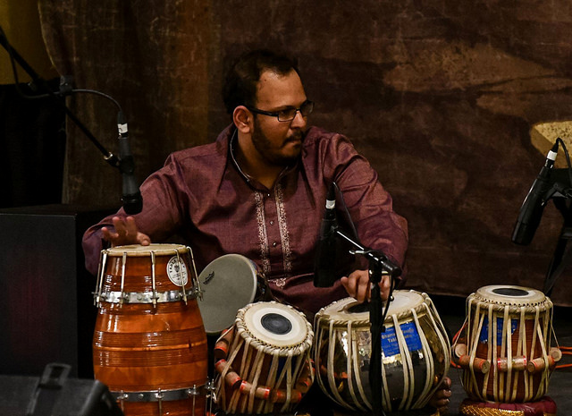

 I am a Quality Engineer or QA or Test Engineer by profession. I have been working in IT since last 8 years. I work for Larsen & Toubro Infotech Ltd and my project is for Travelers Insurance, St Paul. I moved to Minnesota 4 years ago for my work and I have been loving it since then. My daily job involves testing the code written by developers in team, writing automated test cases for UI and services and working with them to find and fix issues. Since I am in an agile team, I also work as a part time developer and write code in Java. I like coding and I am looking for opportunities in my work to do more of it.
I am also a musician and I play various percussion instruments like Tabla, Drums, Cajon, Congas, Darbuka, etc. Basically any surface that can produce sound. I have been learning and playing since last 15 years. I do play in some concerts here and there with various bands/musicians. I have also recorded in tracks for CDs.
Apart from these my other passions include Photography, Sketching and Painting. I like to click wildlife and nature pics. I started painting even before I could write and love to skecth big cats. I can draw a tiger in seconds. I am also a big sports fan namely soccer, tennis and cricket.